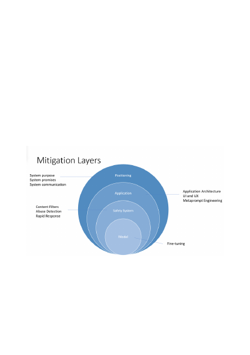
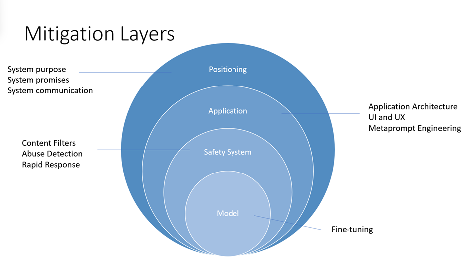

c. Share this information with relevant stakeholders using your organization's
internal compliance processes.
At the end of this measurement stage, you should have a defined measurement
approach to benchmark how your system performs for each potential harm as well as an
initial set of documented results. As you continue implementing and testing mitigations,
the metrics and measurement sets should continue to be refined (for example, to add
metrics for new harms that were initially unanticipated) and the results updated.
Mitigating harms presented by large language models such as the Azure OpenAI
models requires an iterative, layered approach that includes experimentation and
continual measurement. We recommend developing a mitigation plan that
encompasses four layers of mitigations for the harms identified in the earlier stages of
this process:
1. At the model level, it's important to understand the model(s) you'll be using and
what fine-tuning steps may have been taken by the model developers to align the
model towards its intended uses and to reduce the risk of potentially harmful uses
and outcomes.
a. For example, for GPT-4, model developers have been able to use reinforcement
learning methods as a responsible AI tool to better align the model towards the
designers' intended goals.
2. At the safety system level, you should understand the platform level mitigations
that have been implemented. such as the Azure OpenAI content filters which help
Mitigate